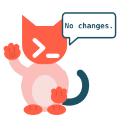
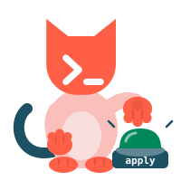

For Databricks Unity Catalog
Unity Catalog tables, changed like code.
A schema change should be a reviewed, versioned change applied by automation, not a hand edit or a CREATE TABLE buried in a notebook. ucat keeps your Databricks managed table definitions in git as YAML, compares them with what is really in Unity Catalog, shows exactly what would change, and applies it from CI, the same way through dev, test and prod.
Declare. Plan. Apply.

Sound familiar?
- A column was added in production by hand. Dev and test never got it.
- Your jobs are full of
CREATE TABLE IF NOT EXISTS. A pipeline ends up doing what it should not: owning its own table definitions. Creation is smeared across the code. It is an anti-pattern and a workaround for a missing tool. - Nobody can review a table change before it reaches production.
- A rename quietly became a drop and a create.
The missing piece next to Declarative Automation Bundles (formerly Databricks Asset Bundles). Bundles deploy jobs and pipelines; ucat deploys tables the same way. Describe them declaratively, review the plan in a pull request, apply the same definitions to dev, test and prod, one target at a time.
Open source under the Apache License 2.0. Issues, contributions welcome, roadmap.Databricks and Unity Catalog are trademarks of Databricks, Inc. ucat is an independent project and is not sponsored or endorsed by Databricks.
How it works
-
Describe tables in YAML
Describe the table you want. One file per table, kept in git next to your code.name: orders schema: silver comment: "Customer orders" columns: - name: id type: BIGINT nullable: false comment: "Primary key" - name: created_at type: TIMESTAMP clustering: columns: [id] -
Plan
ucat reads the live state from the Unity Catalog REST API and shows exactly what would change. There is no state file to store or lock.$ ucat plan -t dev `main`.`silver`.`orders` + create table `main`.`silver`.`orders` (2 columns) Plan: 1 to add, 0 to change, 0 to destroy. -
Apply
Review, then apply. Destructive changes ask for confirmation; CI uses--auto-approve.ucat apply -t dev -
Change it later
Edit the YAML: add a column, change the clustering, set a table property. Runplanandapplyagain; ucat changes the table in place.- name: discount type: DECIMAL(5,2) clustering: columns: [customer_id] tblproperties: delta.enableChangeDataFeed: "true"$ ucat plan -t dev `main`.`silver`.`orders` ~ set 1 tblproperties ~ add column "discount" DECIMAL(5,2) ~ set clustering by (customer_id) Plan: 0 to add, 3 to change, 0 to destroy.
Key features
Schema changes get the same treatment as code: versioned, reviewed, applied by automation.
Describe it, don't script it
You write the table you want. ucat works out the CREATE and ALTER statements, in the right order. No migrations to hand-write.
columns:
- name: id
type: BIGINT
- name: discount
type: DECIMAL(5,2)
clustering:
columns: [customer_id]Reviewed before it runs
ucat plan shows exactly what would change, with --show-sql for the statements. Put it in a pull request.
$ ucat plan -t dev
`main`.`shop`.`orders`
~ set 1 tblproperties
~ add column "discount" DECIMAL(5,2)
~ set clustering by (customer_id)
Plan: 0 to add, 3 to change, 0 to destroy.Safe by default
A rename stays a rename (rename_from), never a drop and a create. A column drop without column mapping is refused at planning time.
rename_from: order_items
$ ucat plan -t dev
`main`.`shop`.`order_lines`
~ rename table order_items → order_lines
Plan: 0 to add, 1 to change, 0 to destroy.Same definitions, every environment
One YAML, a target per environment. CI applies the same definitions to dev, test and prod, one target at a time.
Built for CI/CD
Exit codes, --detailed-exitcode, --json. One binary for Linux, macOS and Windows.
Start from what you have
ucat pull writes YAML from tables that already exist.
How it compares
ucat does one thing: it keeps the definitions of standalone managed tables in git and brings Unity Catalog to that state. The other tools do other jobs; several of them work well next to ucat.
| Criterion | ucat | Terraform | Bundles + LakeflowDeclarative Automation Bundles and Lakeflow pipelines | dbt | Atlas | NotebooksCREATE TABLE IF NOT EXISTS |
|---|---|---|---|---|---|---|
| Designed for | Definitions of standalone managed tables | Infrastructure as code, including tables, schemas, catalogs | Deploying and running pipelines and jobs; pipeline-owned materialized views and streaming tables | Data transformations; a table is the output of a model | Database schema management, declarative or versioned | Running code; creating a table is a side job |
| How you describe a table | Declarative YAML, one file per table | Declarative HCL resource | Pipeline code (SQL or Python) | SQL model plus YAML properties | SQL schema file | Notebook code (SQL or Python) |
| What you run | One binary | Terraform CLI, provider, state file | Databricks CLI; a pipeline in the workspace | Python, dbt-databricks adapter | Atlas CLI, Atlas Pro account for Databricks | Nothing extra |
| Licence and cost | Open source (Apache 2.0), free | Provider: Apache 2.0. Terraform itself: Business Source License | Part of Databricks | dbt Core open source (Apache 2.0), free | Databricks needs the paid Pro plan | Part of Databricks |
| Supports managed tables | ● | ● | ○ | ● | ||
| Works out the change and applies it in place (ALTER) | ● | ● | ○ | |||
| Shows a plan before applying | ● | ○ | ● | ○ |
yes partly (see the note) no. Checked against the vendors' documentation and, for the Terraform provider, its source code (v1.142.0), on 12 November 2026.
What ucat adds on top
Explicit renames with rename_from. Checks while planning, before any DDL runs: an unsupported column type change, a new NOT NULL column, a column drop on a table without column mapping. ucat pull, which writes YAML from tables that already exist.
Use together
- Terraform manages catalogs, schemas and grants; ucat manages the tables inside them.
- Bundles deploy your pipelines; ucat manages the standalone tables around them, for example the tables your jobs load data into.
- dbt transforms downstream; ucat keeps the definitions of the tables you load into.
When ucat is not a fit
- You need materialized views or streaming tables owned by a pipeline.
- You need more than managed tables. See the Limitations (the project is actively developing; the Roadmap shows what is next).
What each tool is for, and where ucat fits
Terraform manages infrastructure, tables included, through the Databricks provider. It keeps a state file and runs the SQL on a cluster or a SQL warehouse. The provider documentation itself warns that it "doesn't handle complex cases of schema evolution" and recommends specialised tools such as Liquibase and Flyway, which run versioned migrations. ucat is a specialised tool for Unity Catalog tables that is declarative instead: no state file, a plan with the statements, no Terraform workflow for a schema change.
Declarative Automation Bundles deploy pipelines, jobs and other resources, among them catalogs, schemas, volumes and registered models. Tables are not a bundle resource type. Deployments use the direct engine, which keeps its own state file (the Terraform engine was removed in CLI 1.20.0). ucat deploys the standalone tables next to the pipelines that bundles deploy.
Lakeflow pipelines build materialized views and streaming tables. While a pipeline is active, it manages the refresh schedule and permissions of its tables: the table and its pipeline are one unit. This is a different ecosystem from standalone managed tables. If your table is produced by such a pipeline, it is not a job for ucat.
dbt transforms data. A table is the output of a model, so its schema follows the model's SQL, and dbt manages only the tables it builds. ucat is for the tables dbt does not build, for example the tables you load data into, and for keeping their definitions reviewed in git.
Atlas is a schema management tool with a declarative mode and Databricks support. Databricks is available only on its Pro plan or during a trial, and the schema is described in SQL. ucat is open source, uses YAML and is built only for Unity Catalog tables.
Notebooks with CREATE TABLE IF NOT EXISTS are the common baseline, and in our view a workaround for a missing tool. Software engineering settled this long ago: a schema change is a versioned migration applied by automation, kept apart from the code that uses the table, and data teams now keep contracts as code in Git instead of scattering them across jobs. For standalone Unity Catalog tables, nothing in the matrix above did that job. ucat does.
Products change: if something here is out of date, please open an issue. All product names and trademarks are the property of their respective owners.
Quickstart
From install to the first plan in about five minutes.
-
Install
Not released yet; the first release will ship binaries for Linux, macOS and Windows. For now, install from source (Go 1.26 or newer).go install github.com/ninilich/ucat@latest ucat version -
Authenticate
Log in the usual Databricks way. ucat uses the workspace host of the target and the login you made for that host.databricks auth login --host https://<workspace>.cloud.databricks.com -
Create a project
ucat init -
See what would change
ucat plan -t dev -
Apply
ucat apply -t dev
Already have tables in Unity Catalog? Import them: ucat pull -t dev writes the YAML for you.
Want to try it on a ready project? The quickstart example creates a small shop schema, changes it twice and cleans up.